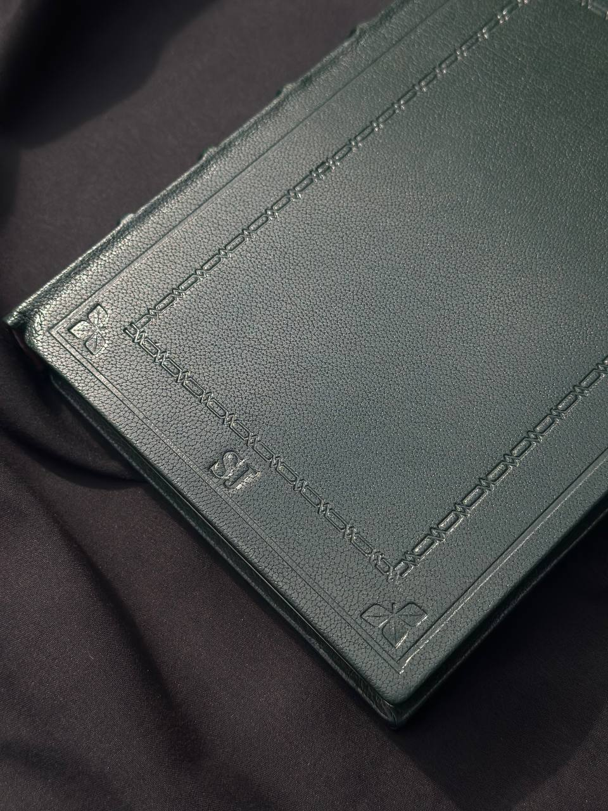
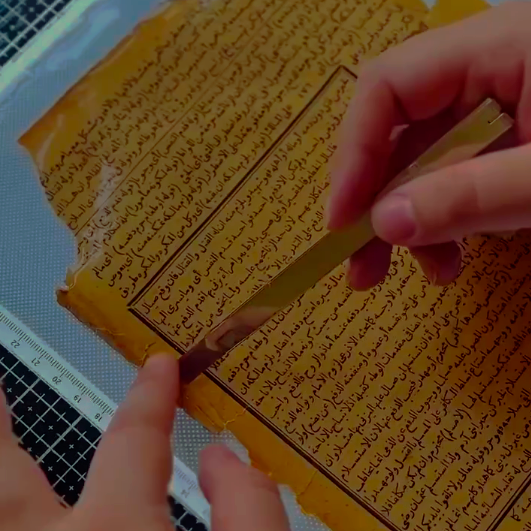
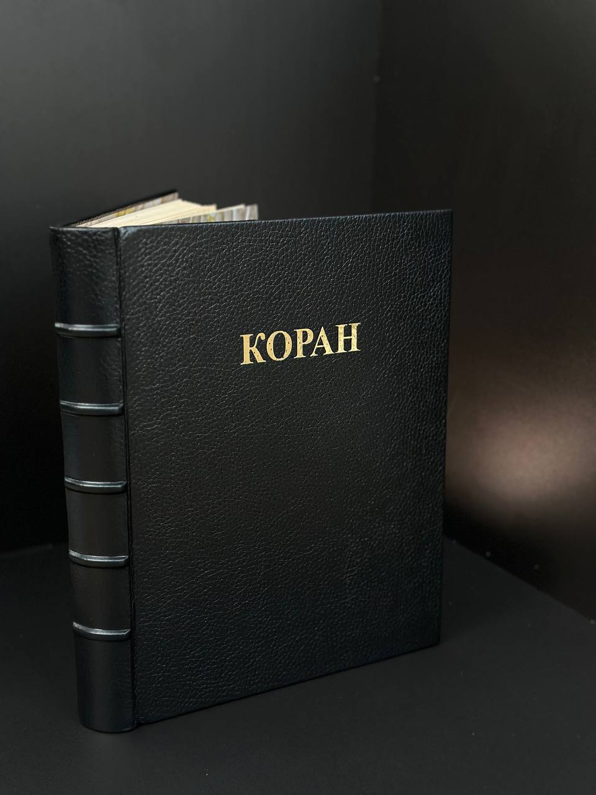
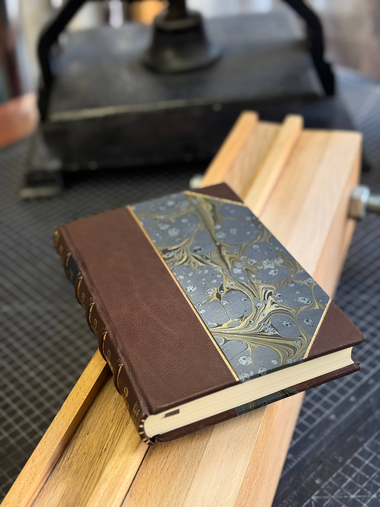
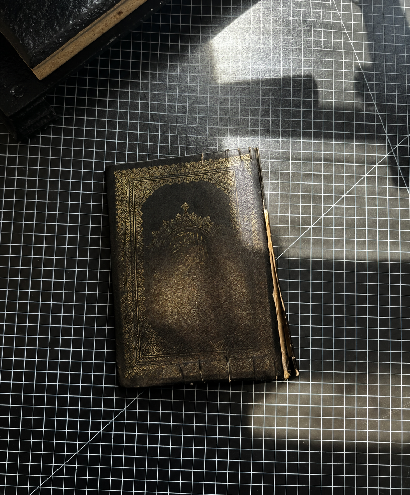
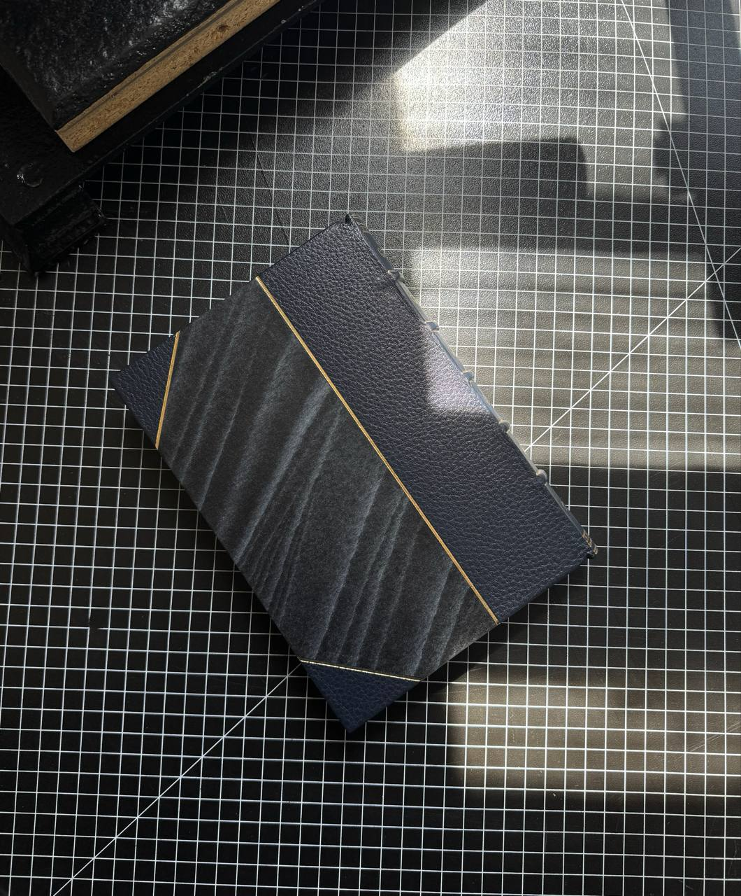

SAJARI
МИССИЯ
Сохранять книги, их историю и память, создавая переплёты, которые смогут жить дальше.
Мы занимаемся ручным переплётом и реставрацией книг, используя традиционные технологии и натуральные материалы.
Наша задача - не просто придать книге красивый внешний вид, а сохранить её ценность, историю и возможность передавать её следующим поколениям.
Особое место занимает работа с Кораном — восстановление старых экземпляров и создание новых переплётов, которые становятся частью семейной истории.

Портфолио

Французский переплёт

Реставрация

Кожаные переплёты для Корана

Мраморная бумага


До / После
ПРИНЦИПЫ И ПОДХОД
-
Сохранить, а не просто восстановить.
Мы придерживаемся принципа минимального вмешательства: сохраняем оригинальные материалы и особенности книги там, где это возможно.
-
Ручная работа.
Большая часть процессов выполняется вручную — от подготовки материалов до изготовления переплёта и отдельных элементов.
-
Натуральные материалы.
В работе используются натуральная кожа, мраморная бумага ручной работы , дизайнерская бумага ,натуральные пигменты и материалы, подходящие для реставрационных работ.
-
Обратимость.
В реставрации предпочтение отдаётся материалам и методам, которые позволяют будущему реставратору при необходимости снова провести реставрационную работу с книгой.
-
Индивидуальный подход.
Каждая книга имеет своё состояние, историю и задачи. Поэтому решение принимается после осмотра конкретного экземпляра.
УСЛУГИ И ПРИБЛИЗИТЕЛЬНАЯ СТОИМОСТЬ
Реставрация:
- Шитье книжного блока - от 3 500
- Реставрация переплётов - от 20 000
- Восстановление повреждённых листов - от 4 000
- Реставрация книжного блока с промывкой - от 30 000
- Реставрация старых и повреждённых Коранов - от 30 000
- Восстановление книг после неудачного ремонта - от 20 000
Переплёт:
- Цельнокожаный французский кожаный переплёт ручной работы - от 20 000
- Составной французский переплет ручной работы - от 13 000
Особые работы:
- Цельнокожажый французский кожаный переплет для любимой книги - от 20 000
- Составной французский кожаный переплет для любимой книги - от 13 000
- Подарочные и семейные издания - от 20 000
Книга воспоминаний:
- Сохранение личных воспоминаний в формате кожаной книги - от 25 000
ЦЕНА
Стоимость рассчитывается индивидуально.
Цена зависит от состояния книжного блока, размера книги, сложности работы, выбранных материалов и вида французского кожаного переплёта.
Для предварительной оценки отправьте фотографии книги и укажите её размеры. После осмотра мы сообщим ориентировочную стоимость и сроки работы.
Точная стоимость определяется после оценки книги.
Если вы хотите чтобы мы вам собрали книгу которую вы сами напишете то можете перейти на сайт для создания по кнопке
СоздатьКОНТАКТЫ
Отправить книгу на оценку.
Сделайте несколько фотографий книги:
- общий вид;
- корешок;
- переплёт;
- повреждённые места;
- Отправьте фотографии нам.
- Мы оценим состояние книги и предложим варианты работы.
- После согласования определяем стоимость, сроки и способ передачи книги в мастерскую.
SAJARI
Наша задача - не просто придать книге красивый внешний вид, а сохранить её ценность, историю и возможность передавать её следующим поколениям.
©Sajari